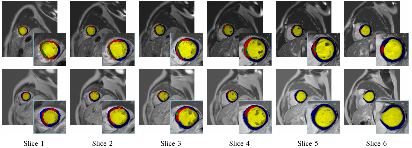

The plan to release the LGE-LVP dataset
The LGE-LVP dataset is currently under peer review as part of its companion publication. Subject to successful acceptance and final compliance checks, the full dataset is projected to be publicly released by November 2025.
Background
Prompt coronary reperfusion is essential in STEMI to limit infarct size (quantified by percentage of infarcted myocardium) and improve prognosis. However, microvascular obstruction (MVO) persists in 50% of cases despite successful PCI, leading to poor long-term outcomes. Late gadolinium enhancement cardiac MRI (LGE-CMR) serves as the gold standard for MVO detection, enabling precise quantification that strongly predicts adverse outcomes including LV remodeling, heart failure, and mortality. Comprehensive segmentation of LV structures (cavity, myocardium) and pathological features (MVO, infarct) from LGE-CMR provides critical prognostic information, forming the foundation for risk-adapted therapeutic strategies.
Our Contributions
To establish a standardized assessment baseline for MVO and infarct in STEMI patients and promote clinical translation of AI-assisted prognostic models, we release a benchmark dataset segment LV and its pathologies in LGE-CMR images. The details of the dataset are given as follows.
How people can assess it?
You can download the agreement from here. Please make sure that a permanent/long-term responsible person (e.g., professor) fills in the agreement with a handwriting signature. After filling it, please send the electrical version to our Email: fengchaolu at cse.neu.edu.cn (Subject: LGE-LVP-Agreement). Please send it through an academic or institute email-addresses such as xxx at xxx.edu.xx. Requests from free email addresses (outlook, gmail, qq etc) will be kindly refused. After confirming your information, we will send the download link to you via Email.
You need to follow the agreement. Usually we will reply in a week. But sometimes the mail does not arrive and display successfully for some unknown reason. If this happened, please change the content or title and try sending again.
The characteristics of the data,images and patients.
Data Characteristics
- Imaging Modality: Cardiac MRI (CMR)
- Scanner: 3.0T Philips Ingenia System
- Scan Period: Dec 2018 - Sep 2023
- Scan Location: Ren Ji Hospital, Shanghai
- Contrast Protocol:
- Late Gadolinium Enhancement (LGE) imaging
- Contrast agent: 0.15 mmol/kg Gd-DTPA (Magnevist, Bayer)
- Acquired 10 minutes post-injection
- Sequence: 2D Phase-Sensitive Inversion Recovery (PSIR)
- Key Parameters:
- TR/TE: 6.1/3 ms | Flip angle: 25°
- FOV: 300 × 300 mm² | Slice thickness: 10 mm
- Resolution: 0.89 × 0.89 mm² (reconstructed)
- Annotation:Expert-labeled MVO (Microvascular Obstruction), MI(myocardial infarction) myocardium and cavity regions.
Patient Characteristics
- Cohort Size: 140 STEMI (ST-segment elevation myocardial infarction) patients
- Clinical Context:
- All patients underwent emergency PCI (percutaneous coronary intervention)
- CMR scans performed ~7 days post-PCI
- Inclusion Criteria:
- Diagnosed STEMI with PCI history
- Complete LGE imaging with identifiable MVO
- Ethics: Compliant with the Declaration of Helsinki
How people can assess it?
The ground truth annotations were generated through a rigorous multi-observer protocol to ensure reliability:
- Initial Delineation: Two board-certified radiologists (with 10 years of experience in CMR) independently delineated the regions of interest using MaZda (version 4.6, Institute of Electronics, Technical University of Łódź, Poland; http://www.eletel.p.lodz.pl/mazda/), a validated software tool for medical image analysis.
- Consensus Building:After initial annotation, the two observers jointly reviewed all cases to resolve discrepancies through discussion, aiming for a unified annotation set.
- Arbitration for Disagreements: In cases where consensus could not be reached (e.g., due to ambiguous anatomical boundaries or imaging artifacts), a senior radiologist with over 20 years of domain expertise was consulted as an arbiter to adjudicate and finalize the GT.
A set of example CMR slices and corresponding annotations is listed as follows.

How people can validate their results.
Researchers can validate their results against our benchmark through the following streamlined process:
- Standardized Evaluation Pipeline:We provide an evaluate.py script with pre-implemented metrics (e.g., Dice score, Hausdorff distance).
--image_dir /path/to/test_images \
--label_dir /path/to/ground_truth \
--pred_dir /path/to/model_predictions
- Custom Path Configuration:
Users must manually specify these directory paths:
image_dir: Preprocessed test images (in our released format)
label_dir: Corresponding ground truth annotations
pred_dir: Model prediction files (should match image filename conventions)
- Validation Best Practices:
Use our official test set split (specified in dataset.json)
Maintain original image resolution (0.89×0.89mm²) and orientation
- Advanced Validation Options:
--metrics (-m) # Select specific metrics
--output_csv # Export quantitative results
--visualize # Generate overlay comparisons